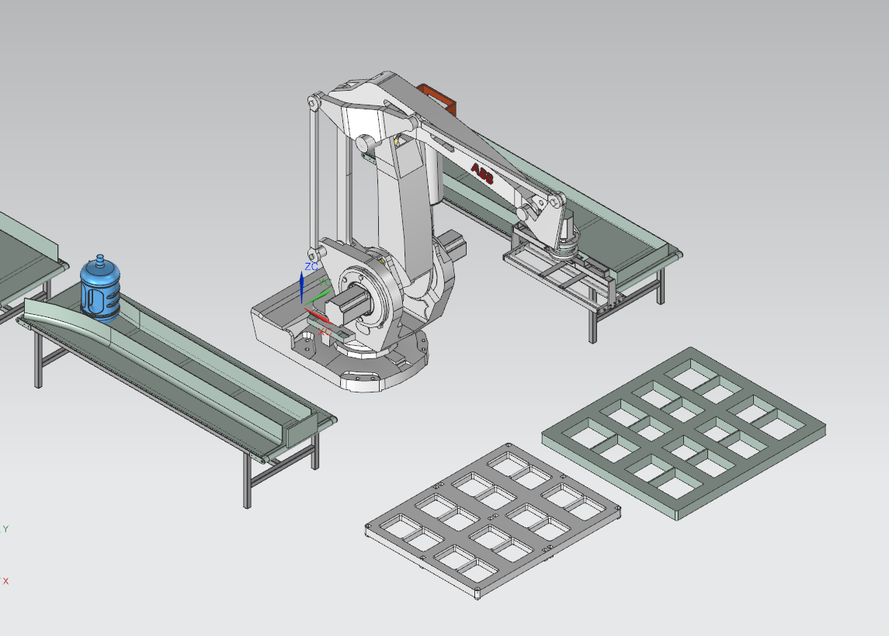
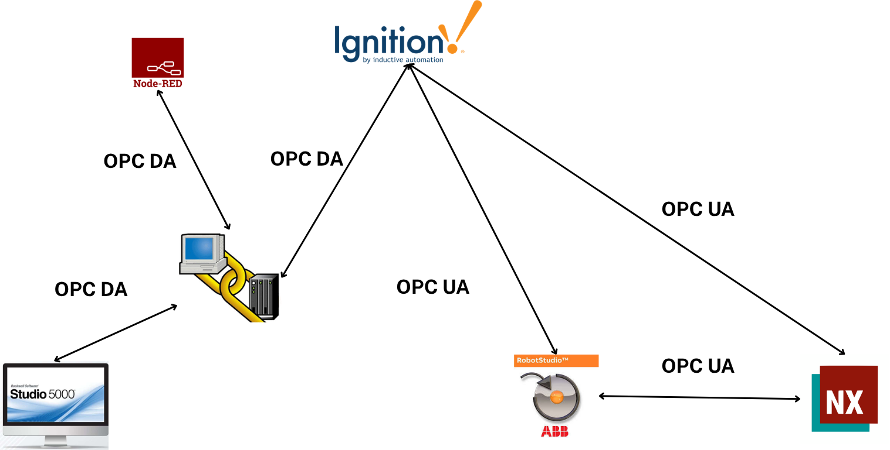

El gemelo digital de este proyecto se centra en la celda robotizada de paletizado (ABB IRB 660) y la línea de garrafones a partir de la etapa de llenado: un modelado fiel que reproduce las secuencias de control y valida la celda en entorno virtual antes del montaje físico, reduciendo el riesgo de paradas.
Comisionamiento virtual
Integración de la lógica de automatización con el emulador de proceso (Logix Emulate): arranque de secuencias del robot y de las estaciones de llenado y tapado, modos de operación, fallas inyectadas y verificación del balance de ciclos de la celda (4,0 s/ciclo, 96 % de utilización) frente al comportamiento simulado.

Sensores y actuadores virtuales
Mapeo de tags a variables de simulación, latencias, escalado de señales y coherencia con diagramas de lazo; preparación para pruebas FAT/SAT.
- Tabla de correspondencia señal física ↔ virtual ↔ tag SCADA.
- Casos de prueba: arranque, paro normal, paro por falla, recuperación.
- Evidencias de sincronización con reloj de simulación.
Arquitectura de red y comunicación OPC
La integración se articula sobre Ignition como concentrador: se comunica por OPC DA con el control (Studio 5000) y con Node-RED, y por OPC UA con la celda (RobotStudio) y el modelo de planta (Siemens NX). RobotStudio y NX intercambian datos por OPC UA directo.

Mapeo de señales del gemelo digital
Correspondencia de señales entre el modelo de planta (Siemens NX / MCD), el control (Studio 5000) y la celda robotizada (RobotStudio), con Ignition como pasarela OPC. Las señales entre RobotStudio y NX viajan por OPC UA directo; las que cruzan hacia el PLC se puentean a través de Ignition (OPC UA ↔ OPC DA).
| Señal | Sistema origen | Sistema destino | Dirección | Medio de comunicación |
|---|---|---|---|---|
Conveyor_Running | Studio 5000 | Siemens NX | Studio 5000 → NX | OPC UA (Ignition) |
Señal_Sensor_Barrera | Siemens NX | Studio 5000 | NX → Studio 5000 | OPC UA (Ignition) |
Señal_Sensor_Linea | Siemens NX | Studio 5000 | NX → Studio 5000 | OPC UA (Ignition) |
Señal_Sensor_Barrera_Coca | Siemens NX | Studio 5000 | NX → Studio 5000 | OPC UA (Ignition) |
Señal_Sensor_Linea_Coca | Siemens NX | Studio 5000 | NX → Studio 5000 | OPC UA (Ignition) |
jAng1 | RobotStudio | Siemens NX | RobotStudio → NX | OPC UA |
jAng2 | RobotStudio | Siemens NX | RobotStudio → NX | OPC UA |
jAng3 | RobotStudio | Siemens NX | RobotStudio → NX | OPC UA |
jAng4 | RobotStudio | Siemens NX | RobotStudio → NX | OPC UA |
Gripper_Closed | RobotStudio | Siemens NX | RobotStudio → NX | OPC UA |
Gripper_Opened | RobotStudio | Siemens NX | RobotStudio → NX | OPC UA |
Robot_Available | RobotStudio | Studio 5000 | RobotStudio → Studio 5000 | OPC UA → Ignition → OPC DA |
Contador_Botellas | Studio 5000 | RobotStudio | Studio 5000 → RobotStudio | OPC DA → Ignition → OPC UA |
Contador_Canastillas | Studio 5000 | RobotStudio | Studio 5000 → RobotStudio | OPC DA → Ignition → OPC UA |
Las señales jAng1–jAng4 transportan los ángulos de los cuatro ejes del IRB 660 hacia el modelo cinemático en NX; Contador_Botellas y Contador_Canastillas realimentan el conteo del PLC a la celda. Coherente con el principio de seguridad (ISO 14121-1, §7.3.6): estas rutas OPC son de proceso, no de seguridad.
Sensores reales de referencia (modelado en NX)
Los sensores virtuales de la tabla anterior se modelan a partir de dos referencias comerciales reales: un interruptor de fin de carrera (detección por contacto) para las señales de barrera y un sensor fotoeléctrico (detección sin contacto) para las señales de línea. Sirven como referencia funcional para reproducir su comportamiento en el gemelo digital.
| Característica | Sensor de barrera — contacto | Sensor de línea — fotoeléctrico |
|---|---|---|
| Señales que representa | Señal_Sensor_Barrera, Señal_Sensor_Barrera_Coca | Señal_Sensor_Linea, Señal_Sensor_Linea_Coca |
| Fabricante · modelo | ATO · HDLS-10H/01YD | Leuze · LE3CL1.1/6G-M8 (P/N 50137201) |
| Tipo | Interruptor de fin de carrera electromecánico | Fotoeléctrico de barrera de luz (receptor) |
| Método de detección | Contacto físico (palanca con rodillo) | Interrupción de un haz de luz |
| Alimentación | Contactos hasta 380 VAC · 4 A | 10–30 VDC |
| Salida / contacto | 1 NC (normalmente cerrado) | Push-Pull (PNP/NPN) |
| Respuesta / conmutación | — | 0,16 ms · 3000 Hz |
| Alcance | Contacto directo | Hasta 5 m (según emisor) |
| Protección / temperatura | IP65 · −30 a 120 °C | — |
El fin de carrera representa la detección de posiciones mecánicas por contacto; el fotoeléctrico, la detección sin contacto de elementos en movimiento dentro de la línea de producción.
Sensores y actuadores virtuales
Modelado de la instrumentación virtual vinculada al emulador de PLC para reproducir el comportamiento de planta.
Disponible tras la sustentación final · Mayo 2026
Validación y cierre de brechas
Lista de verificación frente a requisitos de control, comparación de resultados con simulación de producción y registro de cambios de diseño.
Validación del gemelo digital
Pruebas de escenarios operativos (arranque, cambio de producto, falla) con el gemelo digital integrado a Logix Emulate.
Disponible tras la sustentación final · Mayo 2026
Videos del Módulo
Material audiovisual de gemelo digital.